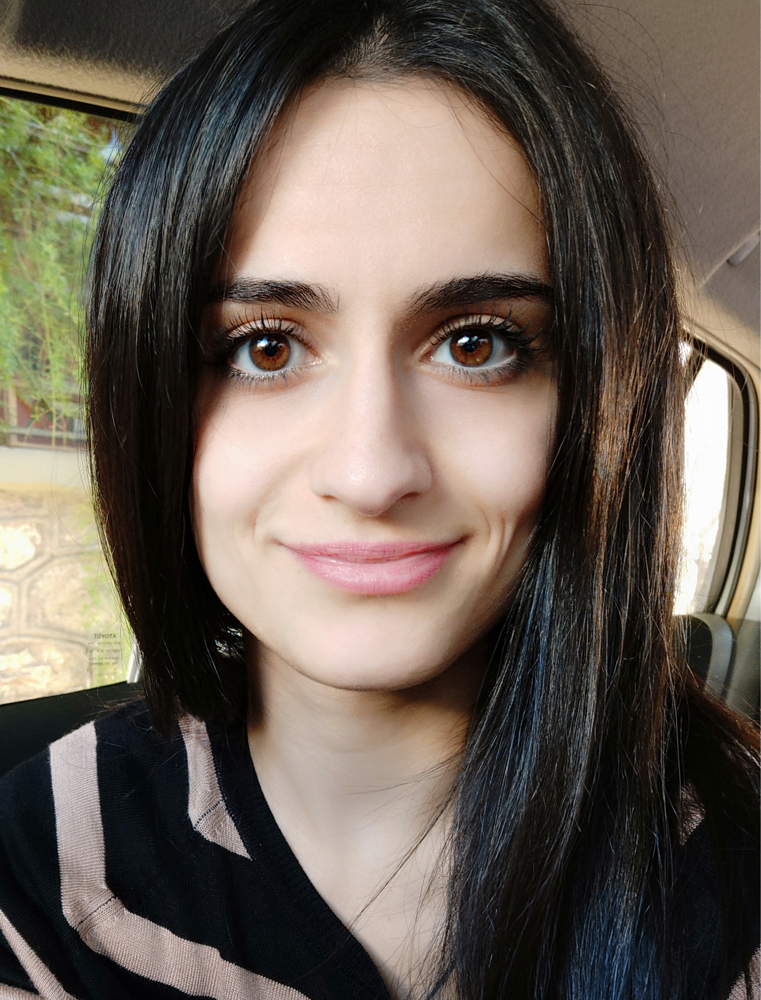

Summary

I am a Computer Science student in my second year of studies, currently
building a strong foundation in web development.
Alongside my degree, I am enrolled in Angela Yu’s Web Development Bootcamp
on Udemy, where I practice hands-on projects and sharpen my coding skills.
My goal is to grow as a developer, expand my knowledge step by step, and
create practical projects that reflect both my progress and passion for
technology.
Education
-
B.Sc. in Computer Science — Hellenic Open University (ΕΑΠ), Second Year
Student
-
B.Sc. in Midwifery — School of Health Sciences (ΣΕΥΠ), Technological
Educational Institute of Attica, 2009–2014
Courses
-
The Complete Web Development Bootcamp — Udemy (Angela Yu), In progress
-
Design and Develop a Killer Website with HTML5 & CSS3 — Udemy, Completed
HTML & CSS sections
Work Experience
-
Supermarket Employee — Lidl, 2019 – Present
- Assisted customers and provided excellent service.
- Managed stock and organized products efficiently.
-
Developed teamwork and communication skills in a busy environment.
-
Pastry Shop & Frozen Yogurt Shop Employee — Yup, Max Perry, 2011 – 2018
- Provided customer service and handled transactions.
- Maintained cleanliness and organized workspace.
- Gained experience in multitasking and teamwork.
-
Camp Team Leader — Kinderland, Summer 2011
- Led and supervised a group of campers.
- Organized activities and ensured a safe environment.
- Developed leadership and problem-solving skills.
Skills
Technical Skills
- HTML (beginner)
- CSS (beginner)
- Python (basic knowledge, completed coursework)
- C (basic knowledge, completed coursework)
Soft Skills
- Teamwork
- Communication
- Organization / Time Management
- Problem Solving